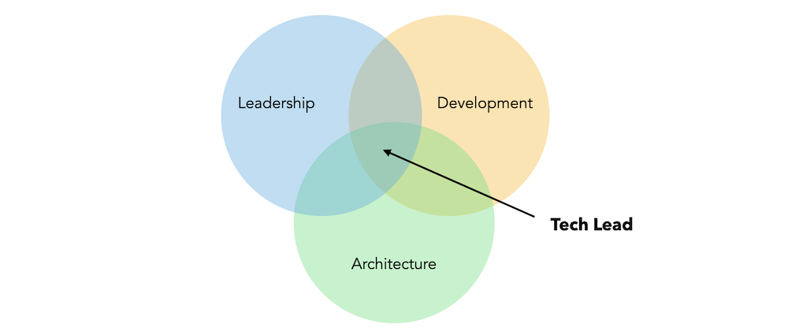

Technical Leader
The job of a tech lead is to make sure the team work with quality. Part of this job is to plan, design, learn and execute technical solutions and improvements. Interact with other tech leads, sharing information and good practices. Also, clarifying technical doubts with stakeholders. Aside from that, a tech lead is also responsible for the team, understanding member’s strengths, weaknesses. Mentoring and guide them.
Some actions that a tech lead can do are:
- Keep in touch with popular tech conferences and events.
- Read tech blogs daily cult.honeypot, Quastor.
- Attend meet-ups and also maintain constant communication with other Tech Leads around you.

Responsibilities
Automate and improve the development process as much as possible, removing the need for manual intervention when possible.
Ensure the team is following best practices described below:
Code quality assurance
A code quality culture is essential, at organizational or individual level. High code quality ensures your codebase is maintainable, scalable, and efficient, allowing to deliver new features faster.
- Establish agreed code styles, such as PEP8. Keep code consistent by establishing conventions for things like naming, spacing and indentation.
- No linters issues. Find bugs, duplicity of code, bad practices, TODO/FIXME... use tools like pre-commit hooks, jenkins, sonarqube, etc.
- Good test code coverage with unit and integration test.
- TDD (testing design development) approach when possible. Start implementing tests before the code.
- Testing plan to ensure the code delivered to live environment is bug free and satisfy the expected results.
- Tracking high-quality issues to manage tech debt properly. Prioritize and schedule tech debt.
- Have a definition of DONE. A checklist of things that need to be done before a ticket is considered done.
- Track code quality metrics and code complexity.
- Pair programming when needed.
- Write Architecture Decision Records (ADRs) next to the code.
Code Comments
Establish conventions to ensure comments are useful, improving engineering velocity and code quality.
- Managing and reducing technical debt
- While TODO/FIXME are good for single player, but avoid using in teams. Use them to aid your personal code development process and never push them to main code base branch.
- Focus on the why.
- Provide context and explain the intent of the code in classes or methods with docstring.
- Avoid obvious comments.
Provide architectural and design direction
- Take key decisions on the architecture and design of the system.
- Follow SOLID principles.
- Avoid code rewritten or delete not long after creation.
- Reduce code smells by refactoring code.
Control Technical Debt
- Keeping a low number of technical debt.
- Prioritize and schedule tech debt.
Ensure code review healthiness
- Ensure code reviews are done and are effective.
- Code reviews should be done by a peer, not by the author.
- The author should be able to explain the code to the reviewer. The reviewer should be able to understand the code without the author's help.
- Applying good pull request practices.
- Reducing time to merge.
- Avoid huge pull request.
- Commit lint online.
Ship good quality code fast
- Divide work into small tasks, each with a clear objective.
- Estimates timelines and track progress.
- Deploying to production frequently, with small releases.
- Semantic versioning and release notes.
- Keep a relation of bugs per deployment. Are detected fast by the team or user? Are fixed fast?
Mentoring and team management
- Act as reference person for the development team.
- Coordination with product owner, managers and other stakeholders. Protecting team for unwanted interruptions/noise.
- Mentor team members, helping them to grow and improve their skills.
- Help with onboarding new team members.
- Understand needs of the team members, their strengths and weaknesses.
- Support team in complex problems.
Motivation
- From external party working with a client, we are the providers, the ones that gives the solution.
- Objective of a ticket is to give value to the product, not just close tickets.
- Adapt our work methodology.
- Client can guide, give us rules. But our work is our project. And needs to be the best possible.
- We as external need to be lead.